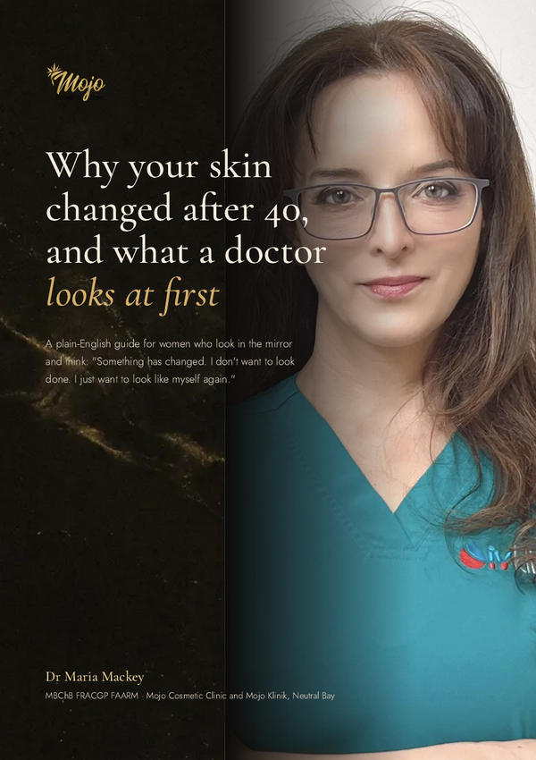

"My skin has changed, and it doesn't look like me anymore."
Watch this short hello from Dr Maria Mackey, then download your guide. Your starting point is just below.
This is a starting point for your conversation with Dr Maria, not a diagnosis or a recommendation. Whether any treatment suits you is decided at a face-to-face consultation, after your skin and health history have been reviewed. Every treatment has risks, and they are explained before you decide.

The signs, what is happening underneath, what regenerative care actually means, and the questions to ask any clinic before you book.
Download PDFSkin renews on its own timetable, so most skin treatments are done as a short course with time in between, then maintenance. Booking the course up front keeps you in that rhythm and costs less than paying session by session.
Look out for a few short emails from Dr Maria: the thinking behind her approach, what happens at a consultation, the questions patients ask most, and how to book when you're ready. No pressure, and you can unsubscribe any time.